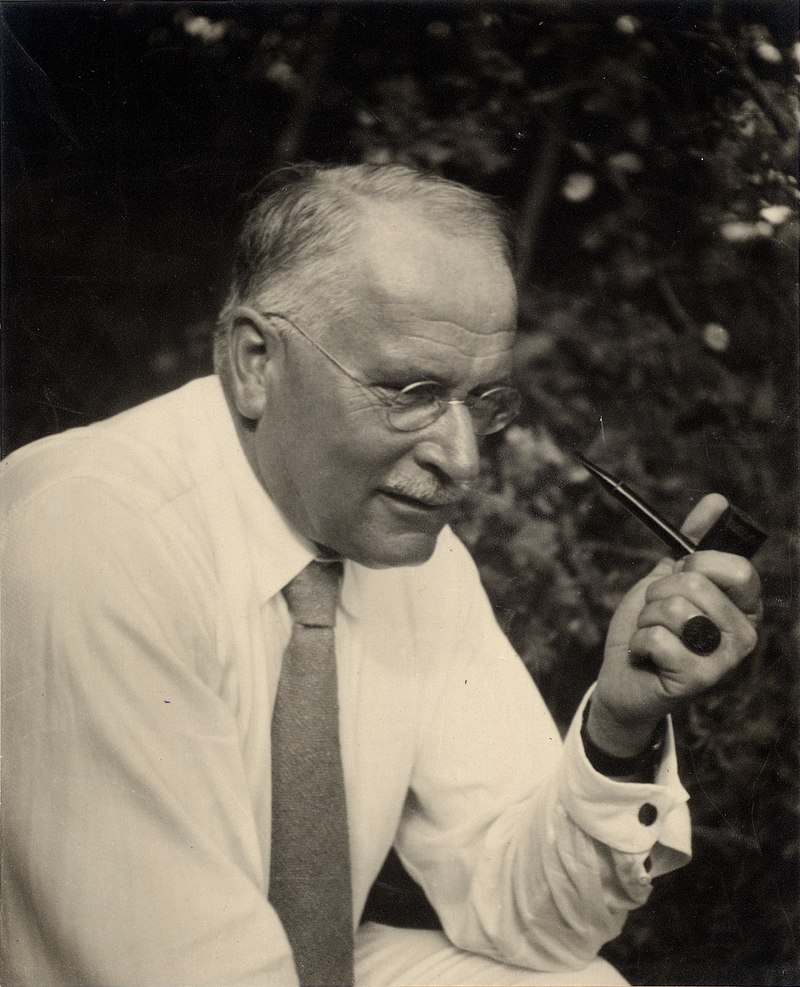

Carl Jung (1875-1961)
about

Carl Gustav Jung (1875-1961) was a Swiss psychiatrist and the founder of analytical psychology. His work has had a profound influence on psychology, philosophy, anthropology, literature, and religious studies.
Archetypes
What are archetypes?
"Core Archetypes"
The Persona
TL;DR: The persona you play for others due to societal expectations.
The Shadow
TL;DR: The things you hate about yourself which you wish to barry and ignore.
Anima/Animus
TL;DR: Animus for women and anima for men. Anima/Animus "represents the contrasexual aspects of our psyche"
The Self
TL;DR: represents the totality of the personality, the integration of the conscious and unconscious.